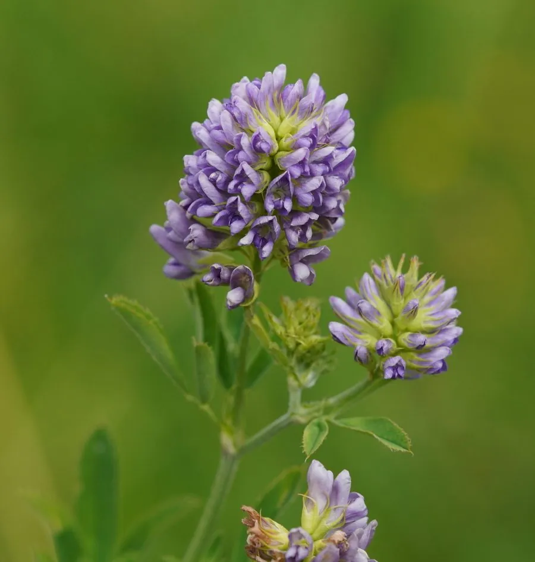

农作物与经济植物 · 植物界
紫花苜蓿 Medicago sativa

豆科苜蓿属多年生草本，花冠紫色、根系深长，蛋白含量高，是世界公认的优质牧草与固氮绿肥作物。
- 分类
- 门被子植物门纲木兰纲目豆目科豆科属苜蓿属
- 栖息环境
- 温带干旱与半干旱地区，耐旱、耐寒、耐盐碱，适应性强
- 地理分布
- 原产西亚与中亚；中国西北、华北、东北广泛栽培，世界温带地区普遍种植
- 保护级别
- IUCN 暂无评估；栽培极广，野生种群未受明显威胁
物种志
紫花苜蓿为多年生草本，高 30–100 厘米，主根发达、可深入土中数米，茎直立或斜升，多分枝。叶为三出复叶，小叶倒卵形至长圆形，边缘具细齿，托叶披针形。总状花序腋生，花冠紫色至淡紫色，长 1–1.5 厘米；荚果螺旋状卷曲，内含数粒肾形种子。
紫花苜蓿原产西亚与中亚，是世界上最古老的栽培牧草之一，在中国西北、华北、东北广泛种植，耐旱、耐寒、耐盐碱，固氮能力强。它的茎叶富含蛋白质与维生素，是奶牛、肉牛与羊的优质饲料，被誉为“牧草之王”；也可作绿肥、水土保持植物与蜜源。紫花苜蓿根系深长，能改良土壤结构；其嫩芽在西方常作沙拉食用。
形态与习性
- 株高30–100 厘米，主根深达数米
- 花期5–7 月，花冠紫色
- 果期7–9 月，荚果螺旋状卷曲
- 光照喜光，长日照作物
- 水分耐旱，忌长期积水
- 土壤以深厚、排水良好的钙质壤土为佳
- 主要用途优质牧草、绿肥、水土保持与蜜源
趣味知识
- 紫花苜蓿被称为“牧草之王”，茎叶蛋白质含量可达 20% 以上。
- 它的主根能扎入土中数米，因此特别耐旱，也能改良深层土壤。
- 苜蓿的根瘤能固定空气中的氮，是优良的绿肥作物。
- 它的荚果呈螺旋状卷曲，成熟后变成褐色，里面藏着肾形种子。